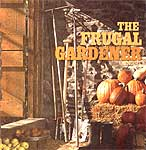
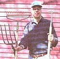
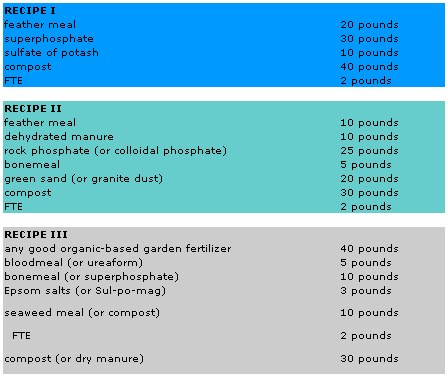

The Frugal Gardener
Eating cheap from the backyard by investing only in tools, making fertilizer and buying cheap seed.
By the Mother Earth News editors
August/September 1997
Everyday, we have a choice: either spend $10 for dinner . . . or spend virtually nothing. Which would you choose?
by Mort Mather
Some people may wonder how I can call myself a lazy gardener when I turn a 3,000-square-foot garden by hand. They just haven't considered the alternatives. I could hire someone to till the garden. Sometimes I do. But when I hire someone I have to pay them... and to pay them I have to have money.. .and to have money I have to work.
For me, being lazy is also being frugal. Spending money to save "work" in the garden so I can work someplace else just doesn't make sense. That's not to say I haven't done just that. When I have found myself working so hard making money that I didn't have time to turn the garden, I was at least smart enough to pay to get it started. That is certainly preferable to not having a garden at all.
I have never seen an argument against the economic advantage of growing food in a garden that figured in the full cost of buying food in a store. Skeptics will quantify every minute spent in the garden and every expense and compare that to the price of a vegetable, without adding in the time and hassle spent shopping. Me, I'd rather hoe a row, pick a bushel of tomatoes, or turn several hundred square feet of garden than go shopping. Here's how simple it is to eat for free (nearly).
Spend on Only One Thing . . . The Tools
There are three basic areas of expense in a garden-tools, fertilizer, and seeds. Tools are a long-term investment and can be amortized for their life. Fertilizer can be free for the collector of organic matter. Seeds can be free for the seedsaver. Since saving seeds has never interested me very much, it often feels like work. I have found ways to cut seed costs to minimal levels, but even buying them in the store figures to about a dollar a pack.
Two important thoughts about tools. First, buy quality. I bought a new hoe and spading fork this year because the quality of previous ones was lacking. I snagged a tree root with the fork and bent one of the tines. Forget bending it back. It was weakened and would most likely bend again with even less strain. I have several hoe and rake heads and handles. I have held them together through a variety of means with exasperating ineffectiveness. I got a great rake 10 years ago that I expect will outlast me. I always intended to get good tools but that intention, it seems, also required forethought. When a tool broke and I needed a replacement I was stuck with what the stores in the area had on hand, which always resulted in a repeat performance in two or three years. The really good tools have come through catalogues, the most recent from Johnny's Selected Seeds in Albion, Maine.
My second general thought is how valuable it is to have the right tool for the job. I am going to give you some options and ways tools can do more than one job. This will be for the purpose of starting out and keeping beginning expenses to a minimum. The long-range goal should be to have a collection of quality tools that are best for the jobs you are doing.
Having said that, there is a world of fabulously expensive but barely useful options out there, just waiting to snag the unsuspecting. For example, a tiny power tiller is useless in my opinion. It will cost more in annual maintenance than the amortized cost of a spade or spading fork. In anything less than a large garden, a tiller becomes a toy, not a tool. If you want one, put it in your recreation budget rather than your garden budget. That is the only way it will make economic sense. Remember that I am talking about a home garden. A good walk behind a rear-tined tiller was indispensable to me in my one person, one acre market garden. If I had gotten much bigger, I would have needed some riding equipment.
After the garden is turned, a garden rake is needed. It performs two basic functions, breaking down lumps in the soil to make a smooth planting surface and disturbing weed seedlings on soil that has not been planted within 10 days of turning. When I turn the soil by hand I generally turn a bed four-feet wide and 25-feet long, then smooth it out with the rake, and plant.
When I hire someone to till it is most economical to have them till the entire garden in one visit. My planting season begins about April 15, and the majority of the garden is not planted until the first week in June. If I have the garden tilled April 15, the unplanted sections will be a weedy mess by June if left untended. This is where the 10day rule comes in. It is just about the most valuable piece of information I have ever imparted to another gardener. Let's say the garden is tilled on the 15th. I mark my calendar for the 25th to rake all the unplanted areas. The planted areas will have been disturbed at sometime during the 10 days, each disturbance setting a date 10 days later for it to be cultivated. This cultivation destroys more weeds easier than any other activity I can imagine. The weed seedlings are then just a very vulnerable single root hair going down and a single stem pushing up. The poor babies don't have a chance. Give them another week and it's a different story!
This raking is really very fast, just skimming the surface. If the surface is smooth and loose enough, the back of the rake actually works best. My favorite rake has a blade on the back that works wonderfully well in my soil.
Note the caveat, "in my soil" as I mentioned "loose soil" before. Soil type depends on the size of particles. Sandy soil is gritty, and clay soil is smooth (because the particles are so small you can't see them). Your soil is probably somewhere in between. If you are new to gardening, you might want to check the soil in gardens in your area. Ask gardeners who have soil like yours what tools they like to use. That information may help you decide what will be best for you.
So much for preparing the soil for planting. You can transplant without any tools other than your two hands. Can't get any cheaper than that. Barbara likes a little hand trowel for transplanting. I typically use a spade for transplanting and making hills. I dig a spade-size hole where the seedling is going to go, scoop in a shovel of compost and mix it up before transplanting. The spading fork won't work here because the turned soil is too loose to be lifted by the fork. A spading fork doesn't work very well in compost either.
Compost is best handled with a pitch fork when it is coarse and a spade or broad shovel when it is fine. Compost leads us to another tool for carrying the material from the compost pile to the garden. The cheapest is a bushel basket. You may be able to get one free from a market or restaurant. You will most likely want either a wheelbarrow or garden cart. Barbara prefers the cart, and I prefer the wheelbarrow. I probably think subconsciously that a wheelbarrow is more macho. My wheelbarrow is a construction type, the biggest and best. Don't get anything less. Some tube-metal thing will be junk before you get it home. It's ability to carry any weight is ridiculous. It can't carry a bale of hay without getting wiggly, and I end up dumping whatever I'm hauling. Relegating yourself to wheeling dainty grass clippings or leaves will make you feel foolish.
When I bought a cart I got the largest, but that turned out to be a mistake. It's too big for Barbara to handle happily and so I find myself recruited for a job she would have done alone if the cart had been a size smaller.
...And the Last Two Tools
I like straight rows. It is not just neatness or being a control freak. Straight rows are easier to cultivate. Besides, I do think they look nice. To aid in this pursuit, I have two, old aluminum tent pole sections about four-feet long with 60 feet of really wonderful twine tied between them. I marked the poles at half-foot intervals so I can use them to measure distances between rows. The twine is seldom unwound more than 25 feet, but the garden is 50 by 60 so I can mark a straight line along any side with my device. The twine is nylon (someone gave it to me when they heard me complaining about my garden rowmarker twine breaking all the time).
I like an old-fashioned broad hoe for making furrows for planting potatoes, peas, corn, and beans. The other rows can be made with my hand, or if I don't want to bend over, the handle of the hoe. They are generally no more than a line drawn on the surface of the soil for seeds that will only be covered with a sprinkling of soil. In the absence of a spade, a hoe like this can be used to mix compost in hills also.
That's it. A fork or spade, a rake, two poles, string, a broad blade hoe, and a basket, wheelbarrow, or cart. A good fork, rake, and hoe can be purchased for about $100, and, if properly maintained, they will outlast you. Maintenance is simple. Keep them clean and don't leave them outside.
The hoe will do a fine job of cultivating between rows 10 days after planting and then 10 days after that. It will be good for leaning on the rest of the year when you visit the garden, a prop to make people think you're working. There are a lot of different kinds of hoes, and as the years go by you may be tempted to buy another, lighter hoe for cultivation. I have two I love, but since I can only use one at a time one has become obsolete.
I also have a four-prong cultivator I like very much. It was great at pulling witch grass rhizomes to the surface, but there just aren't enough of those left to warrant carrying the tool to the garden, so now I just drop down and dive in with my hands.
Free Fertilizers
A lawn rake is handy for collecting grass clippings or leaves that are good mulches and fertilizers for the garden. However, you should leave your grass clippings on the lawn where they will fertilize it. It doesn't make much sense to haul that high nitrogen fertilizer away. Nitrogen is what makes the lawn green. Don't let other people in on this fact, however. They may want to keep their grass clippings, thus eliminating a source of fertilizer. Try to hook up with someone who mows lawns for a living. Ask them what they do with the grass clippings they collect. You may be able to save them some mileage by having them dump them near your garden. It's best if you can establish a relationship with the lawn people, and gently find out if they have sprayed an herbicide recently. Generally this is done only once a year. Best you don't get the clippings from the cutting or two after they sprayed the poison. Sometimes they get touchy about the subject.
Free fertilizer is all around us, literally. The air we breath is 78 percent nitrogen, which is one of the most important elements plants need. However, legumes are the only plants able to use the nitrogen in the atmosphere. The other plants need nitrogen in another form in the soil. Legumes will leave some nitrogen in the soil for other plants. When plants die (either on top of the soil or in the soil) the nitrogen they collected during their lifetime enriches the returns. Animals also return nitrogen to the soil when they die and through their excrement.
All you need to do to find free fertilizer is to become an organic scavenger. It may not always be obvious where organic material that others don't want can be found. A good scavenger will think about the source. Someone who has a horse has organic waste, for example. I approached a man who lived just a mile away from me and asked what he did with his horse manure. Since he had hay fields I thought he probably spread it, but it cost nothing to ask. It turned out he took the manure to the dump. I was much closer. He started delivering it. I sure was sorry when he got rid of the horse.
Living in a coastal community where the tourists hate the smell of seaweed, I knew that the town raked seaweed off the beaches in the summer. Where did it go? I found that it went to the landfill where they buried it at the end of the day. Would they put it off to the side where farmers and gardeners could have access to it? Sure. Not only did I have it collected for me and brought half the way closer to my house, but when I went to get a load the dump attendant with the front-end loader filled me up. In one summer I spread seaweed over three acres of land.
An acquaintance in a small town in New York wondered what the town did with the leaves they collected every fall. From that point on they filled in her fence enclosed garden. The leaves insulated the garden over the winter, making it possible for earthworms to work in unfrozen ground. Come spring she had the leaves tilled into the soil for a beautiful, humus rich garden.
Remembering that the Native Americans were fond of planting a fish in each hill of corn, I asked a local fish market what they did with fish heads, innards, and the like. They gave me a time and place I could pick up buckets of wonderfully fertile material.
Some stuff stinks, no doubt about it. If you have close neighbors, you need to be considerate of their noses. There is also the potential for attracting a range of pests as diverse as coons, deer, cats, dogs, rodents, and flies. Cleanliness, is the secret to odor free organic matter collection and use. The bucket used to carry fish scraps needs to be rinsed, sometimes washed and always left in the air because aerobic bacteria are much less odoriferous than anaerobic bacteria.
When smelly materials are being used, make sure they are used immediately. If fish scraps are going into corn hills, get the scraps when you are about to plant the corn. Smelly materials can be collected anytime, however, but you do need to be ready for them. The best way to do that is to be ready to make or add to a compost pile. A compost pile must have a combination of materials. Any combination will work eventually, but it will get cooking fastest if it has a high-nitrogen material. How do you know what's high in nitrogen? Fish, seaweed, and manure win the trophies. Mix or layer these with some nice weeds, spoiled hay, leaves, or grass clippings and the smell goes away. I always mix in some garden soil as well, which is another odor neutralizer.
Nitrogen is only one of the 16 elements that plants need for healthy growth. When you are starting a garden you should test your soil every year. After you get the humus built up you will find that the nutrients will do a pretty good job of taking care of themselves as long as you keep adding organic material. Actually it isn't the nutrients taking care of themselves. It is soil organisms eating the organic material and excreting fertilizer and eventually dying that keeps things in balance.
I didn't even mention table scraps. When I had a market garden, there were two restaurants I sold to that would bag their vegetable waste for me. It was considerable. We limited it to vegetable because I only delivered twice a week and meat scraps get ripe pretty fast in warm weather. We don't even put our own meat scraps on the compost because of animals.
We have composted meat. The reason we don't do it now is that we don't eat much of it so there isn't much of that kind of organic matter around. Barbara has found that if she puts the meat in the indoor compost containers and it sits around for more than a day at room temperature, it will start to smell. Bins are practical for any compost pile, but particularly for those in which meat scraps are a component. By the way, animals can sniff out meat even when under a layer of other materials.
Cheaper Seed
Saving money on seeds can be accomplished in two ways-saving seeds from year to year or ordering cooperatively. When saving seeds, don't plant hybrids, know how the plant whose seed you plan to save propagates, and avoid cross pollination. I doubt you'll ever get a briefer instruction on saving seeds. There are others much more qualified in this topic than I.
I did organize cooperative seed orders for a number of years, however. It started when we were living below the poverty level and loving it. It didn't take too much math to figure out that if you ordered seeds in larger quantities, you saved a lot of money. For example, in one catalog this year beans are $1.75 per two ounce packet and $3.95 for half a pound. Half a pound will make four packets at $.99 each. If you order five pounds, the packet price drops to $.53. Another way to look at it: if three people order half a pound they will pay $1.32, a savings of $0.43, and have two packets left over.
Cooperative seed orders were the most popular meetings of our county chapter of the Maine Organic Farmers and Gardeners Association (MOFGA) for many years. We got together for a meeting and pot luck supper in January to hash over our favorite varieties. Everyone brought their seed catalogs and there would be much lively discussion that ended in our selecting one, two, and occasionally three varieties of each vegetable and a few flowers. I made up order forms using the varieties we chose, and these were passed around to anyone interested. After the deadline for ordering, I collated the orders. That was really the biggest job. I worked it out so I could overlap them one way and read quantity, and overlap them the other way to add up the dollar amounts.
It got to be a large order from several seed companies. I loved having the boxes of seeds arrive. Going through them, organizing it all to make sure the pick-up went as smoothly as possible, and figuring out measures rather than weighing amounts was great fun. And there were always leftover seeds, which were my payment for organizing the order. Then I found a couple of events where I could sell the surplus seeds, and we almost made money ...almost.
TWO FATHERS OF FERTILIZERS
John Jeavons has a general fertilizer program for first and second-year gardens, assuming that the soil is poor and the owner hasn't-for one reason or another-done a soil test. His recipe, which follows, is meant to be applied per 100-square feet at each planting.
0ne of the most popular fertilizer recipes we've ever seen was introduced by MOTHER contributor Lee Fryer just about 10 years ago. Below are three of Lee's formulas. Each makes about 100 pounds of fertilizer and provides at least three percent nitrogen, six percent phosphorus, and six percent potash. Lee recommends applying a total of four pounds of these mixtures per 100-square-feet of garden per season (applied both throughout the garden and under seed rows prior to planting) if-in his words-"you want to grow a garden that'll impress the neighbors."
For nitrogen: 10 pounds cottonseed meal, or 5 pounds fish meal,or 5 pounds blood meal, or 4 pounds hoof and horn meal
For phosphorus:
45 pounds bone meal, or 10 pounds phosphate rock, or 10 pounds soft phosphate
For potash and trace minerals:
1 pound kelp meal and 2 pounds wood ashes, or 10 pounds crushed granite, or 10 pounds green sand
As a texturizer:
2 cubic feet of manure
For microscopic life and humus:
up to 1 cubic yard of compost
For calcium:
2 pounds eggshells
GARDEN SUPERSTARS FOR ESSENTIAL VITAMINS AND MINERALS
The following listing contains major plant sources of important vitamins and minerals. The information is approximate. It's impossible to assign an exact nutrient value to a crop-growing and eating conditions vary widely. Not all the scientific test results agree either. Nor does everyone agree that the government's RDA (Recommended Daily Allowance) of each vitamin and mineral is appropriate.
The lists are generally in descending order-i.e., the higher a food is on a list, the more of that nutrient it contains. Where I found specific values for certain crops, I added them in parentheses. (Such statements refer to one cup of the food unless otherwise noted.) The abbreviations IU, mg., and DGLVs stand for international units, milligrams, and dark green leafy vegetables, respectively.
VITAMIN A, or carotene: Good for the skin; mucous membranes in mouth, urinary tract, and respiratory and digestive systems; and night vision. RDA: 5,000 IU. Primary Sources: Carrots (one raw carrot = 7,930 IU; the Juwarot variety has the highest vitamin A content), sweet potatoes, most DGLVs (spinach = 14,850 IU), lamb's-quarters, dandelions, violet leaves, parsley, garden cress, butternut and hubbard squashes, pumpkins, and cantaloupes.
VITAMIN B1, or thiamine: Instrumental in the body's oxidation of carbohydrates and promotes health of nervous system, digestion, and appetite. RDA: 1.2-1.5 mg.
Primary Sources: Sunflower seeds (2.84 mg.), millet, turnip greens, dried peas and beans (pintos = 1.6 mg, others average 1.1 mg), sesame seeds, soybeans.
VITAMIN B2, or riboflavin: Essential for eyesight; promotes metabolism of lipids and tryptophan. RDA: 1.2-1.7 mg. Primary Sources: Sunflower seeds (3.3 mg.), kidney bean sprouts, mushrooms, millet, DGLVs (collards = .38 mg., broc coli = .31 mg.), dried beans and peas, amaranth, and lamb 'squarters.
VITAMIN B3, or niacin: Promotes health of skin tissue and nervous system, and aids energy conversion. RDA: 1419 mg. Primary Sources: Peanuts (10 large peanuts = 3.1 mg.), sunflower seeds, ginkgo nuts, wild rice, brown rice, broccoli, dried beans (navy beans = 5.E mg.), peas (3.7 mg.), collards, mush rooms, whole wheat, barley, and oats.
VITAMIN B6, or pyridoxine: Helps it hemoglobin synthesis and in warding of anemia and dermatitis (including acne) may help prevent tooth decay and cancer RDA: 1.8-2.0 mg. Primary Sources: Dried beans (notably lentils and garbanzos), or angejuice, brawn rice, soybeans, bananas kale, spinach, black-eyed peas, pigeon peas, potatoes (with skins), sunflower seeds, peanuts, parsley, and whole grains.
VITAMIN C: Prevents scurvy, reputed tc help prevent colds and increase overall disease resistance (most animals synthe size their own supply). RDA: 5080 mg Primary Sources: Violet leaves, rape, alfalfa, rose hips, hot chili peppers, broccoli, kale, turnip greens, cauliflower, parsley, brussels sprouts, watercress, honeydew melon, currants, and blueberries.
VITAMIN E, or tocopherol: Reputed to help antibody production, heal bums, treat heart disorders, and even improve one's sex life! RDA: 8-10 IU. Primary Sources: Roasted peanuts, lima beans, sesame seeds, cabbage, asparagus, DGLVs, whole grain rice and wheat, oats, sunflower seeds, and sweet potatoes.
VITAMIN K: Vital for blood clotting (and damaged by antibiotics). RDA: 50-140 micrograms. Primary Sources: Spinach, cabbage, soybeans, cauliflower, tomatoes, carrots, and peas.
FOLIC ACID: Vital to blood-forming process, cell replacement, and for fetal growth (it's estimated one in three pregnant women is deficient in folic acid). RDA: 400 micrograms. Primary Sources: Soybeans, sunflower seeds, wheat germ and bran, pinto beans, watercress, garbanzos, spinach (0.5 Ib. = 463 micrograms), brussels sprouts, romaine lettuce (1 cup chopped = 102 micrograms), mung beans, white beans (0.5 cup = 132 micrograms), kidney beans, lima beans, peanuts, pigeon peas, blackeyed peas, potatoes, and orange juice.
PANTOTHENIC ACID: Helps the immune system, promotes antibody production, relieves intestinal bloating, and alleviates physical and emotional stress. RDA: 4-7 mg. Primary Sources: Sunflower seeds, fava beans, peanuts (3.5 ounces = 2.8 mg.), soybeans, oats, pigeon peas, lentils, broccoli (one stalk raw broccoli =1.8 mg.), brussels sprouts, sweet potatoes, green peas, filberts, cashews, and ginkgo nuts.
CALCIUM: Essential to muscles and the transmission of nervous impulses; vital part of bones and teeth. RDA: 8001200 mg. Primary Sources: Broccoli, dandelions, soybeans, rutabagas, sesame seeds, many seaweeds, sunflower seeds, bok choy (250 mg.), fava beans, collards, kale (200 mg.), mustard greens, and okra (150 mg.). Calcium levels are also high in spinach, chard, sorrel, beet greens, lamb's quarters, parsley, rhubarb, and wheat bran, but calcium is poorly utilized in these foods because of their high oxalic acid content.
PHOSPHORUS: Also a vital part of bones and teeth. Phosphorus and calcium are the two major minerals in the body and work best when supplied in relatively even amounts (along with vitamin D). RDA: 800-1200 mg. Primary Sources: Pumpkin and squash seeds, sunflower seeds, millet, dried beans, lima beans, peas, corn, soybeans, wheat germ and bran, and DGLVs.
IRON: Vital in blood's proper functioning, as it's required for the exchange of oxygen in the metabolic process. RDA: 10-18 mg. Primary Sources: Parsley, pumpkin and squash seeds, dried beans, millet, sesame, amaranth, pigeon peas, sunflower seeds, sorghum syrup, dark rye, wild rice, sunchokes, and prune juice.
|
 |
 |
 |
|
 |
|
|